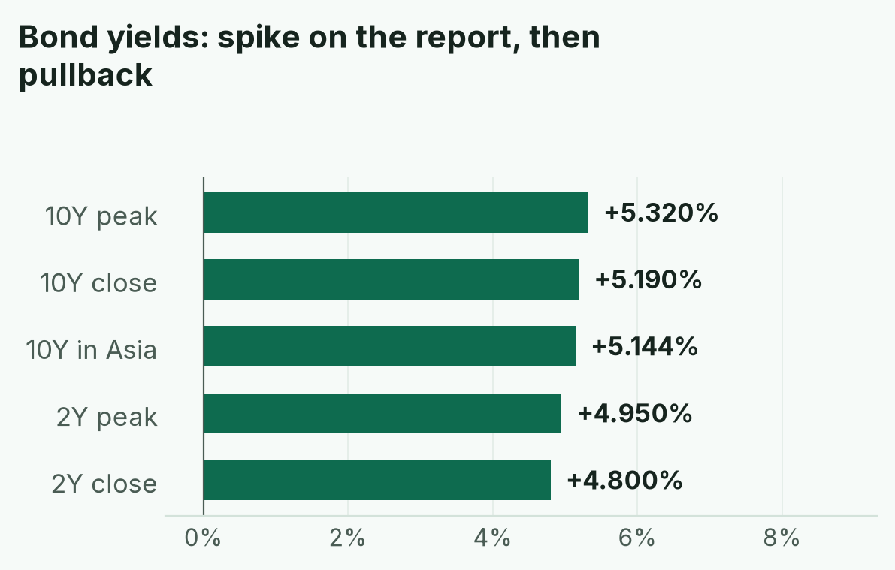
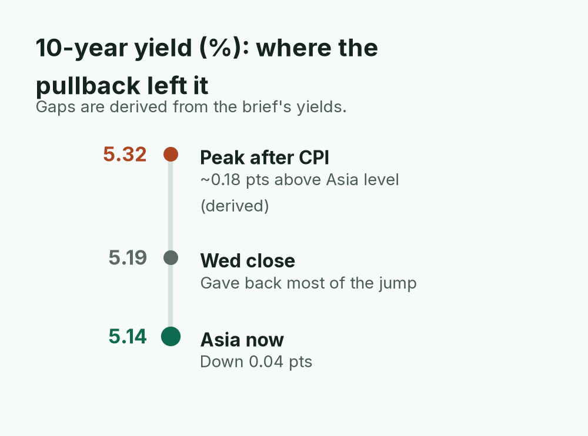
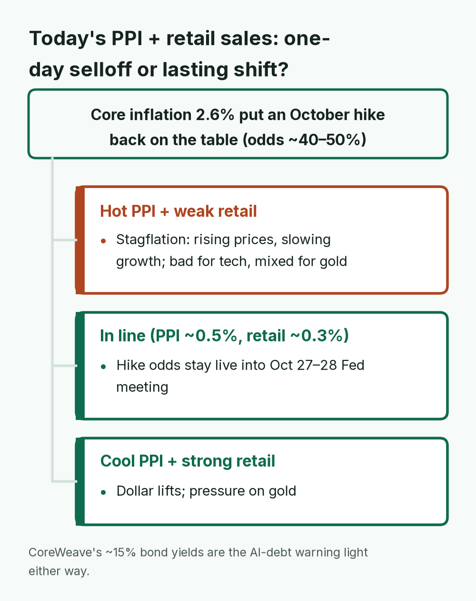
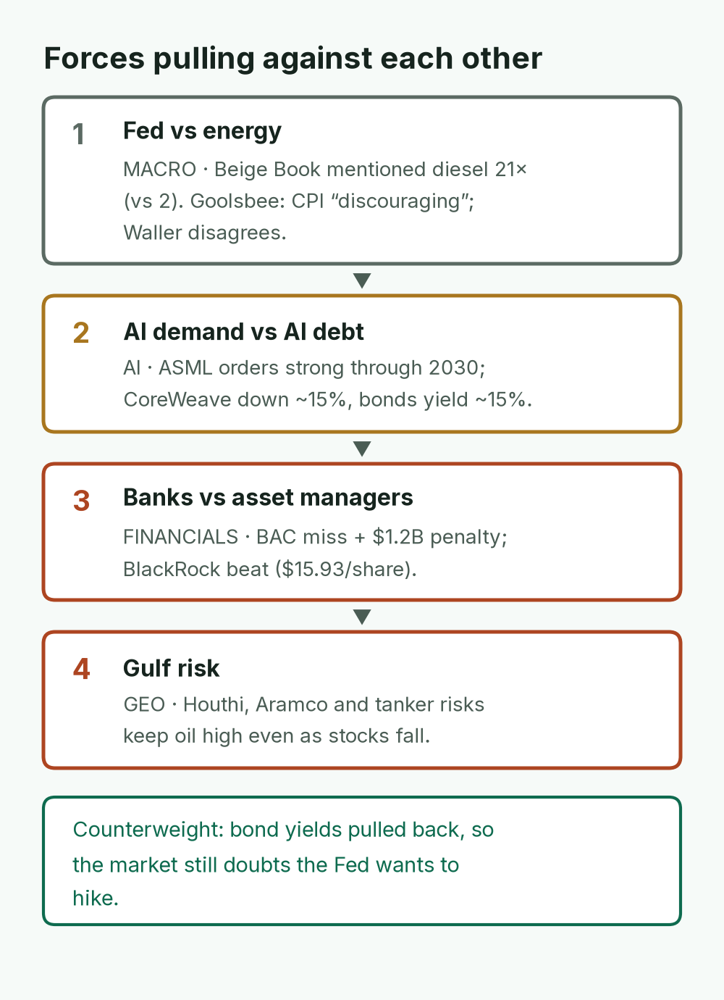
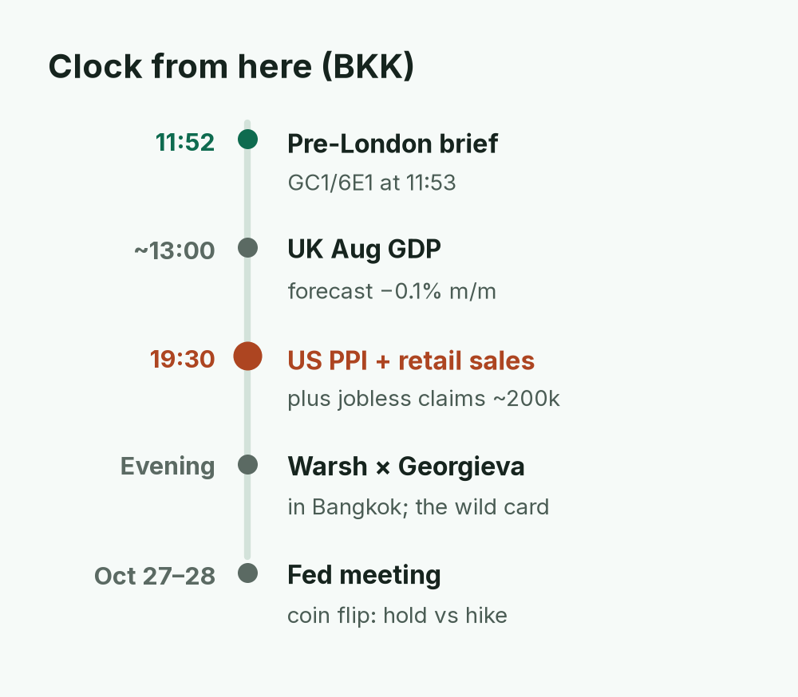
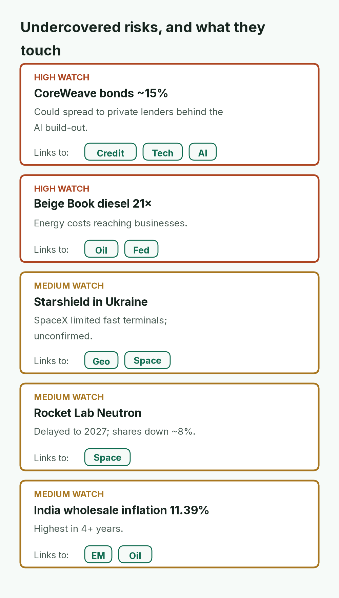
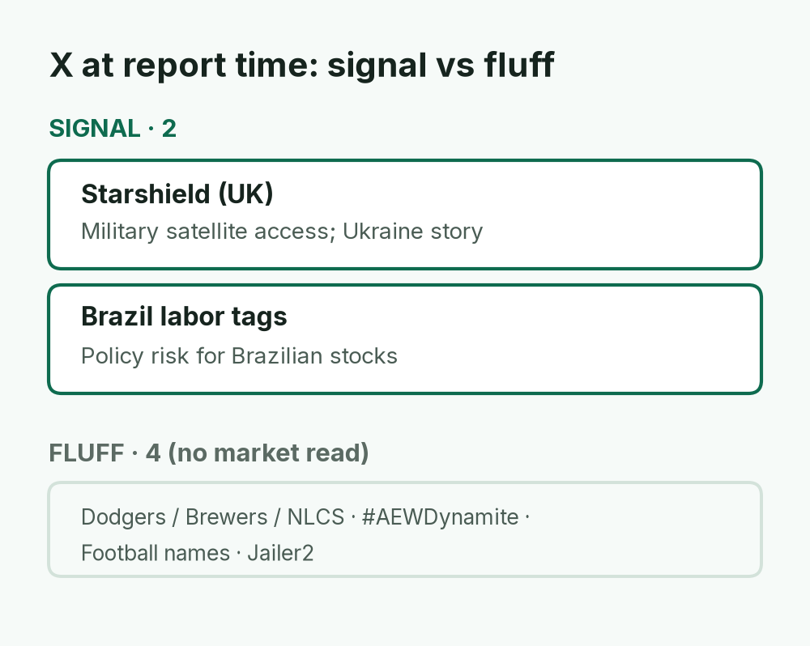
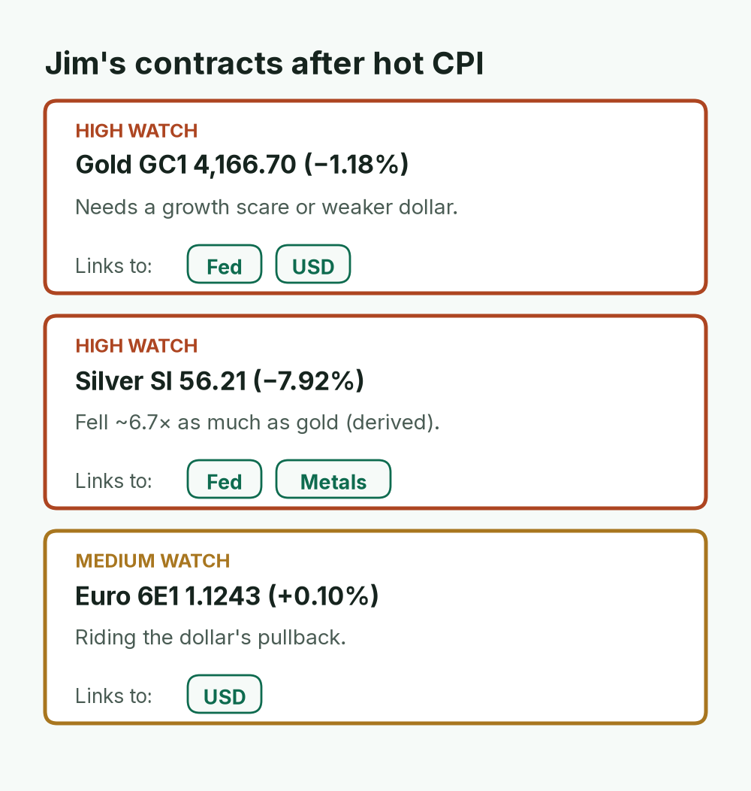
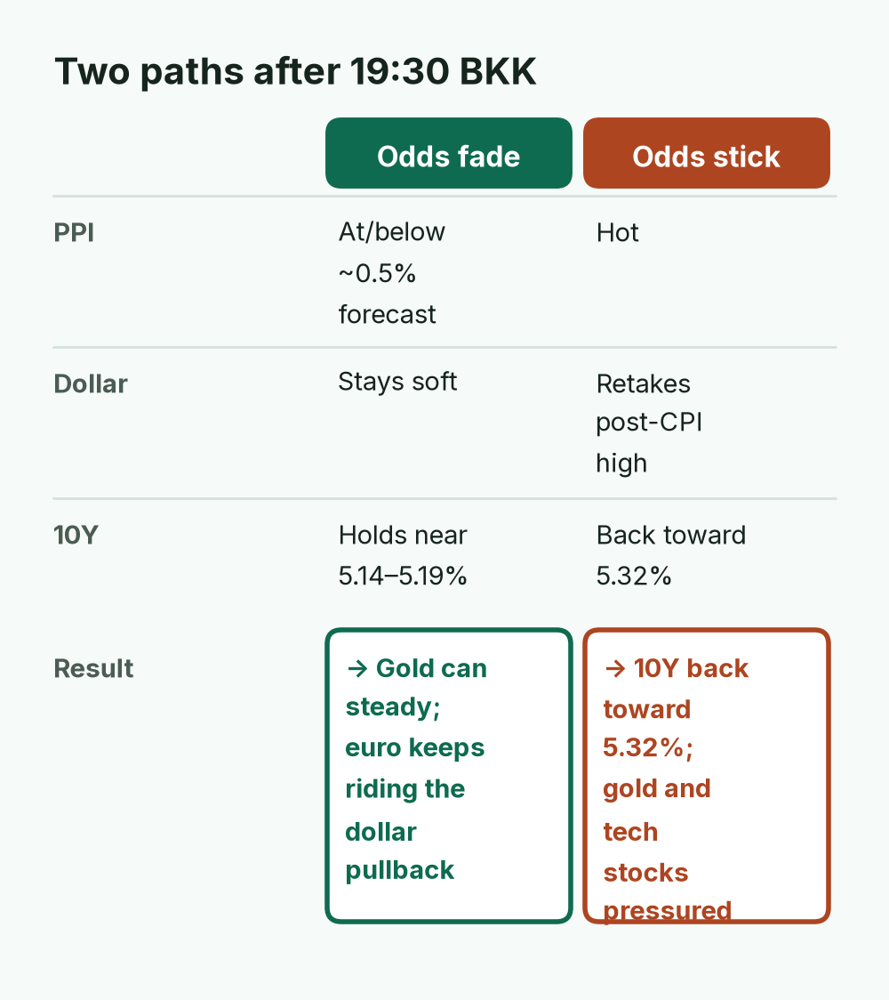

Stocks and gold fell after core inflation beat forecasts, while euro futures edged up as the dollar cooled. NQ futures (−3.68%) are left out because that figure is provisional and low confidence.
TODAY'S CALL
Today's US producer prices (PPI) and retail sales at 19:30 BKK decide whether October hike odds stick. Gold needs a weaker dollar to recover; don't bet against the euro until the dollar retakes its post-CPI high.
WATCH (BKK)
~13:00 UK Aug GDP
19:30 US PPI + retail sales + jobless claims
Evening: Warsh × Georgieva (Bangkok)
10Y back toward its 5.32% spike high?
GC1 4,166.70 / 6E1 1.1243

Yields (what the US government pays to borrow) jumped on the inflation report and gave most of it back by the close. Traders have not locked in a hike, but 40–50% odds are real.
April · Market Intel, pre-London · Thu Oct 15, 2026 · ~11:52 BKK / ~05:52 London
Headline: a hotter-than-expected inflation report knocked US stocks down. The S&P 500 fell 1.11% and the Nasdaq fell 1.88%, its worst day since late July.
Bond yields jumped on the news, then gave most of it back. Gold futures kept falling. Euro futures edged up as the dollar cooled.
Scoreboard notes: futures are contracts that trade nearly 24 hours, so they show the mood before stock markets open. Quotes are at 04:53 UTC / 11:53 BKK (source: AtlasVector). The Nasdaq 100 futures figure (NQ 29,963, −3.68%) is provisional. It is about twice the cash Nasdaq's −1.88%, probably a quirk of switching to the next contract month (a "contract roll"), and could not be verified independently. (Low confidence.) US oil futures (WTI) were at 94.13.
1) Top signals
Inflation ran hot. CPI (the main US inflation gauge) rose 3.7% over the year vs 3.6% expected. Core CPI (leaving out food and energy) rose 2.6% vs ~2.5% expected. Gasoline caused over half the monthly rise; service prices are still climbing. (High: BLS via Reuters)
Yields spiked, then faded; a hike is now possible. The 10-year yield (what the US government pays to borrow) hit ~5.32%, then closed ~5.19%. Traders put October hike odds at about 40–50%. (High: HLB, Yonhap; odds medium-high)
Gold fell, the euro firmed.Gold (GC1) 4,166.70, −1.18%, because higher hike odds make gold, which pays no interest, less attractive. Euro (6E1) 1.1243, +0.10% as the dollar gave back its post-CPI jump. (High: AtlasVector)
AI debt stress and split banks. CoreWeave (rents out AI computing) fell ~15%; its bonds yield ~15%, a refinancing worry. Bank of America missed and took a $1.2B penalty (shares −7%); Morgan Stanley and BlackRock beat. (High: CNBC/Reuters, company reports)

The 10-year yield is ~0.18 points (derived) below its post-CPI peak. A hot PPI that sends it back up would pressure gold and tech stocks together.
2) Why it matters
Core inflation at 2.6% is what put an October hike back on the table. A higher gasoline price was already priced in. Rising service prices were not.
The bond pullback shows the market still doubts the Fed wants to raise rates. Inflation is still being fed by energy: Brent (the global oil benchmark) is above $105.
CoreWeave matters because a 15% borrowing cost is a warning sign for companies that borrowed heavily to build AI data centers.
Mentor: today's producer prices and retail sales will show whether higher costs are reaching shoppers. That decides if Wednesday was a one-day selloff or a lasting shift.

The brief's rule of thumb: what PPI and retail sales do together decides whether Wednesday was a one-day selloff or a lasting shift.
3) Chessboard
Fed vs energy. The Fed's Beige Book (its regular survey of businesses) mentioned diesel 21 times, up from 2. Energy costs are now reaching ordinary businesses.
Fed views are split. Fed official Goolsbee called the CPI report "discouraging." Waller and Goolsbee still disagree on hikes.
AI demand vs AI debt.ASML (the main maker of chip-making machines) says orders are strong through 2030; sales were ~€11.7B and its full-year forecast is €44–45B. CoreWeave's debt troubles point the other way. Demand is fine. Balance sheets are not.
Banks vs asset managers. Bank of America's penalty and miss contrast with BlackRock's beat ($15.93 a share).
Gulf risk. Houthi attacks and Aramco and tanker risks keep oil high even when stocks fall.

Whichever side wins each pair sets the direction for rates, tech stocks and banks. Demand is fine; balance sheets are not.
4) Leading indicators (BKK times)
~13:00: UK GDP for August (forecast −0.1% month on month). It could move the pound.
19:30: US producer prices (PPI, what businesses pay for inputs). Forecast ~0.5% for the month and ~5.3% for the year.
19:30: US retail sales (forecast ~0.3%) and weekly jobless claims (~200k).
Evening: Fed Chair Warsh speaks with IMF chief Georgieva in Bangkok.
Oct 27–28: Fed meeting. It is now a coin flip between holding and hiking.
Rule of thumb: hot PPI plus weak retail sales means rising prices with slowing growth ("stagflation"), bad for tech stocks and mixed for gold. Cool PPI plus strong retail sales would lift the dollar and pressure gold.

19:30 BKK is the day's deciding moment; Warsh speaking in Bangkok later can confirm or cool the reaction.
5) Undercovered
CoreWeave's 15% bond yields. This could spread to private lenders that funded the AI build-out. (High)
Diesel in the Beige Book. The clearest early sign that war-driven energy costs are reaching businesses. (High: Fed Beige Book)
Starshield in Ukraine. Starshield is SpaceX's government and military satellite network. X news says SpaceX limited fast terminals during a strike window; Zelenskyy called it betrayal; Musk says the US government controls it. (Medium: X news summary)
Rocket Lab delays its Neutron rocket to 2027 after flaws in a carbon part. Shares fell ~8%. (Medium)
India's wholesale inflation hit 11.39%, the highest in 4+ years. (Medium)

CoreWeave's bond yields are the private-credit warning, and diesel in the Beige Book shows energy costs reaching the real economy.
Signal: Starshield (military satellite access) and Brazil labor politics (policy risk for Brazilian stocks). X news is also covering the gold drop, CoreWeave and CPI.
Noise: baseball playoffs, pro wrestling and sports nicknames.

Only Starshield and Brazil's labor tags could matter for markets today. X news, not trends, is carrying the gold, CoreWeave and CPI stories.
7) Jim's contracts
Gold (GC1) 4,166.70, −1.18% (−49.60). It needs a growth scare or a weaker dollar to stop falling.
Silver (SI) 56.21, −7.92%.
Euro (6E1) 1.1243, +0.10%. It is riding the dollar's pullback. Euro cash (EUR/USD) closed Wednesday at 1.1156 (−0.38%).

Silver fell far harder than gold, showing how hard the hike odds hit metals. The euro is the one contract the dollar's cooling helps.
Bottom line
Wednesday's selloff reset the market. Today's PPI and retail sales decide whether the hike odds stick. For Jim: gold needs a weaker dollar to recover. Don't bet against the euro until the dollar retakes its post-CPI high. Warsh in Bangkok tonight is the wild card.
Confidence: cash closes, CPI, AtlasVector futures and company reports are high. Hike odds and X news summaries are medium. Starshield details are medium until confirmed. The NQ futures figure is low.

Gold needs a weaker dollar to recover; the euro is safe until the dollar retakes its post-CPI high.
Sent by April via briefs-by-april@mail.grokbot.com · Figures from April's brief; "—" = not reported. Not investment advice.